1. Pierwsze kroki
Stapik Calendar to kalendarz na komputer z Linuxem. Pokazuje jeden miesiąc naraz, a każdy dzień może zawierać dowolną liczbę wpisów. Wpis ma nazwę, opcjonalny link do strony internetowej i opcjonalny kolor.
Wszystko, co robisz, jest zapisywane automatycznie na Twoim komputerze. Jeśli masz własny serwer Stapik Cloud, kalendarz może być też synchronizowany między wszystkimi Twoimi urządzeniami (zobacz Synchronizacja ze Stapik Cloud).
Krótki przewodnik:
- Uruchom aplikację z menu aplikacji (Stapik Calendar). Otworzy się na bieżącym miesiącu.
- Kliknij dwukrotnie puste miejsce w dowolnym dniu.
- Wpisz nazwę i naciśnij OK. Wpis pojawi się w tym dniu.
- Kliknij wpis prawym przyciskiem myszy, aby nadać mu kolor, przeciągnij go na inny dzień, aby go przenieść, albo kliknij ✕, aby go usunąć.
2. Okno główne
Okno składa się, od góry, z:
- Paska menu — Plik, Edycja, Ustawienia i Pomoc (zobacz Menu).
- Paska nawigacji — nazwa wyświetlanego miesiąca i roku oraz przyciski do ich zmiany.
- Nagłówka dni tygodnia — od poniedziałku do niedzieli. Tydzień zaczyna się w poniedziałek.
- Komórek dni — jedna komórka na każdy dzień. Numer dnia jest w rogu komórki, a dzisiejszy dzień jest wyróżniony. Komórki spoza wyświetlanego miesiąca pozostają puste.
- Paska stanu — widoczny tylko wtedy, gdy kalendarz jest połączony z chmurą; pokazuje stan synchronizacji (zobacz Synchronizacja ze Stapik Cloud).
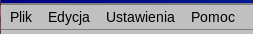
4. Wpisy
4.1 Dodawanie wpisu
Kliknij dwukrotnie puste miejsce w komórce dnia. Otworzy się okno Nowy wpis:
- Nazwa — wymagana. Bez nazwy wpis nie zostanie utworzony.
- Link (opcjonalny) — adres strony internetowej, który później otworzysz jednym kliknięciem.
- Kolor — pierwszy, pusty kwadracik oznacza brak koloru; pozostałe to kolory (zobacz Kolory).
Zatwierdź przyciskiem OK albo wybierz Anuluj, aby odrzucić.
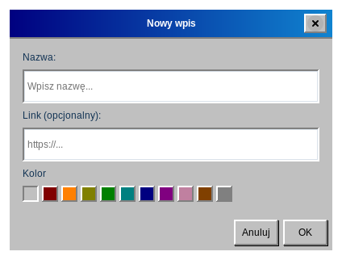
4.2 Szybkie dodawanie ze schowka
Jeśli skopiujesz adres strony (zaczynający się od http:// lub https://), kliknij dzień prawym przyciskiem myszy. Aplikacja utworzy w tym dniu wpis z tym adresem jako linkiem i tytułem strony jako nazwą. Wymaga to połączenia z internetem; jeśli nie uda się odczytać tytułu, wpis dostanie nazwę Bez nazwy. Gdy w schowku nie ma adresu strony, nic się nie dzieje.
4.3 Otwieranie linku
Gdy wpis ma link, wskaźnik myszy nad jego nazwą zmienia się w rączkę. Kliknij wpis jeden raz, aby otworzyć link w domyślnej przeglądarce. Aplikacja czeka chwilę (czas dwukliku ustawiony w systemie), żeby upewnić się, że nie chodziło o dwuklik, więc strona otwiera się z lekkim opóźnieniem.
http i https. Link wpisany bez schematu, na przykład example.com, zostanie otwarty jako https://example.com.4.4 Edycja wpisu
Kliknij wpis dwukrotnie, aby otworzyć okno Edytuj wpis, w którym możesz zmienić nazwę, link i kolor.
4.5 Usuwanie wpisu
Kliknij przycisk ✕ przy prawej krawędzi wpisu. Usunięty wpis można przywrócić poleceniem Cofnij.
4.6 Kolory
Kliknij wpis prawym przyciskiem myszy, aby otworzyć rząd kwadracików, i wybierz kolor. Kolor można też wybrać w oknach Nowy wpis i Edytuj wpis. Dostępne kolory: czerwony, pomarańczowy, żółty, zielony, morski, niebieski, fioletowy, różowy, brązowy i szary oraz wygląd domyślny bez koloru.
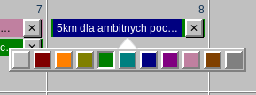
4.7 Przenoszenie i kopiowanie
Przeciągnij wpis i upuść go na innym dniu, aby go przenieść. Przytrzymaj Ctrl podczas przeciągania, aby zamiast tego go skopiować. Upuszczenie wpisu na jego własnym dniu niczego nie zmienia.
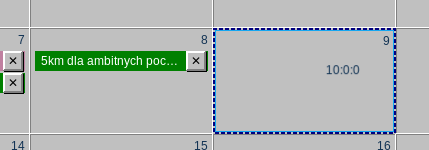
4.8 Dni z wieloma wpisami
Gdy dzień ma więcej wpisów, niż mieści się w komórce, komórkę można przewijać. Wpisy są wyświetlane w kolejności dodawania.
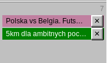
5. Cofanie i ponawianie
Dodawanie, edycję (także zmianę koloru), usuwanie, przenoszenie i kopiowanie wpisów można cofnąć. Użyj Edycja → Cofnij i Edycja → Ponów albo skrótów Ctrl+Z i Ctrl+Shift+Z.
Pozycja menu podaje nazwę operacji, na przykład Cofnij: usunięcie wpisu „Dentysta”, i jest wyszarzona, gdy nie ma niczego do cofnięcia lub ponowienia. Historia obejmuje do 100 kroków. Nie jest zapisywana po zamknięciu aplikacji i jest czyszczona, gdy wersja z chmury zastąpi Twój lokalny kalendarz (zobacz Synchronizacja ze Stapik Cloud).
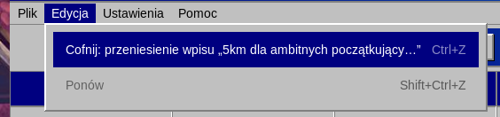
7. Skróty klawiszowe i działania myszą
Klawiatura
| Klawisze | Działanie |
|---|---|
| Ctrl+Z | Cofnij |
| Ctrl+Shift+Z | Ponów |
| Ctrl+Q | Wyjście |
| F1 | Otwórz ten poradnik |
Mysz
| Gdzie | Działanie | Skutek |
|---|---|---|
| Puste miejsce w dniu | dwuklik | nowy wpis |
| Puste miejsce w dniu | prawy przycisk | szybkie dodanie ze skopiowanego adresu strony |
| Wpis | kliknięcie | otwiera jego link (jeśli go ma) |
| Wpis | dwuklik | edycja wpisu |
| Wpis | prawy przycisk | wybór koloru |
| Wpis | przeciągnięcie na inny dzień | przeniesienie |
| Wpis | Ctrl + przeciągnięcie na inny dzień | skopiowanie |
| ✕ przy wpisie | kliknięcie | usunięcie wpisu |
8. Język i motyw
Wybierz Ustawienia → Język, aby przełączać się między polskim, angielskim i niemieckim. Cała aplikacja zmienia się od razu, razem z nazwami miesięcy i dni tygodnia.
Wybierz Ustawienia → Motyw, aby zmienić wygląd: Klasyczny (retro), Klasyczny różowy (ten sam układ w różach i fioletach) lub Nowoczesny (jasny, płaski wygląd). Twoje wybory są zapamiętywane przy kolejnym uruchomieniu aplikacji.
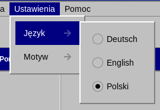
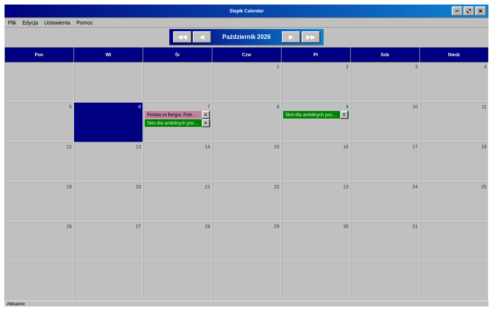
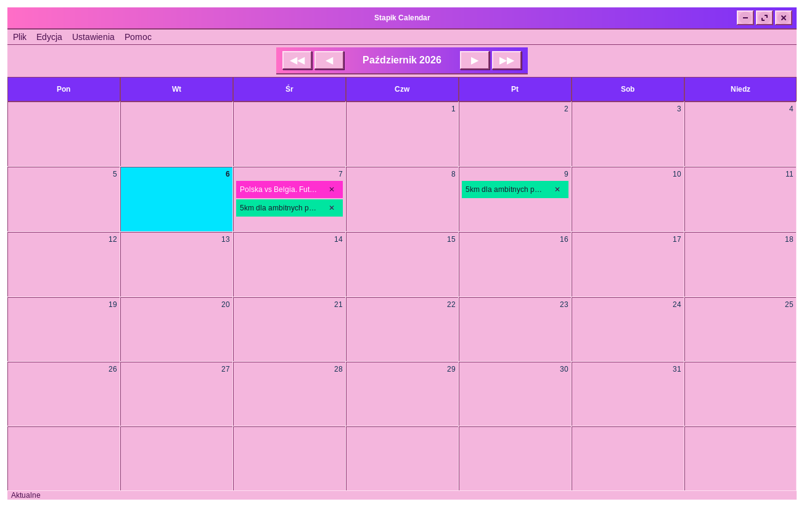
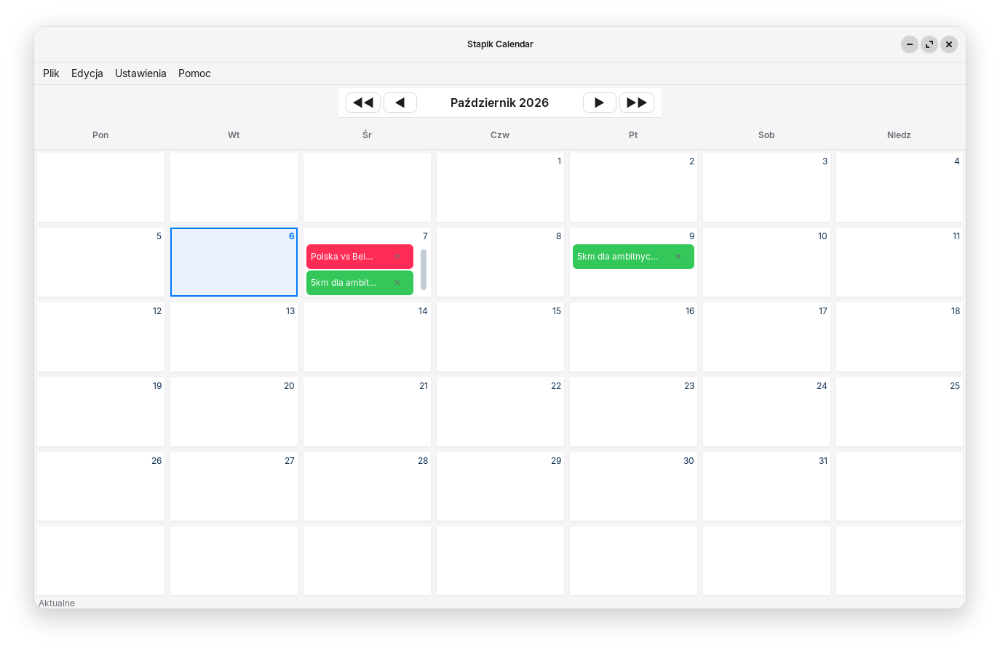
9. Synchronizacja ze Stapik Cloud
Stapik Cloud to serwer, który uruchamiasz samodzielnie. Przechowuje jedną kopię Twojego kalendarza, dzięki czemu wszystkie Twoje komputery pokazują te same wpisy. Chmura jest opcjonalna — bez niej kalendarz po prostu działa na jednym komputerze.
9.1 Czego potrzebujesz
- Działającego serwera Stapik Cloud, do którego Twój komputer ma dostęp, oraz jego adresu (adresu API), na przykład
https://cloud.example.com. - Klucza API wystawionego dla tego urządzenia. W panelu administracyjnym Stapik Cloud każde urządzenie dostaje własny klucz; nie ma klucza wspólnego.
Kalendarz jest przechowywany na serwerze w dokumencie o nazwie calendar.json.
9.2 Łączenie
- Wybierz Plik → Połącz z chmurą.
- Wpisz Adres API. Musi zaczynać się od
http://lubhttps://. - Wpisz Klucz API. Zaznacz Pokaż klucz, jeśli chcesz sprawdzić, co wpisałeś.
- Kliknij Połącz.
- Po chwili komunikat poinformuje, czy połączenie się udało (Połączono), czy nie (Nie udało się połączyć, wraz z przyczyną).
http://, okno ostrzeże, że połączenie nie jest bezpieczne: klucz i kalendarz są wysyłane bez szyfrowania. Używaj https://, gdy serwer jest dostępny przez internet.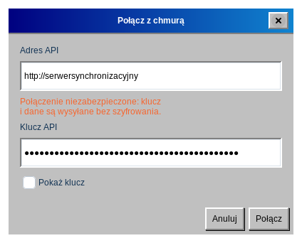
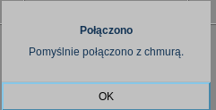
Ustawienia są zapamiętywane. Przy następnym uruchomieniu aplikacja łączy się sama, a okno otwierane z Połącz z chmurą jest już wypełnione, więc możesz go użyć do zmiany serwera lub klucza.
Co dzieje się przy pierwszej synchronizacji: jeśli chmura jest jeszcze pusta, Twój kalendarz zostaje wysłany. Jeśli kopia w chmurze jest nowsza od Twojej, zastępuje Twój lokalny kalendarz. W pozostałych przypadkach wysyłany jest Twój lokalny kalendarz.
9.3 Pasek stanu
Gdy chmura jest skonfigurowana, u dołu okna widać bieżący stan:
| Stan | Znaczenie |
|---|---|
| Aktualne | Twój kalendarz i chmura są takie same. |
| Synchronizacja… | Trwa synchronizacja. |
| Offline | Nie można połączyć się z serwerem. Twoje zmiany są bezpieczne na tym komputerze, a aplikacja ponawia próby sama (pierwszą po 2 sekundach, potem coraz rzadziej, najwyżej co 5 minut). |
| Konflikt: zachowano wersję z serwera | W chmurze była nowsza wersja i zastąpiła Twoją lokalną (zobacz Konflikty). |
| Błąd synchronizacji | Synchronizacja nie powiodła się z innego powodu, na przykład serwer odrzucił żądanie. Dane lokalne pozostają nienaruszone. |
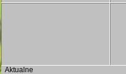
9.4 Jak działa synchronizacja
- Każda zmiana jest od razu zapisywana na Twoim komputerze.
- Wysyłanie do chmury odbywa się w tle, około 1,5 sekundy po ostatniej zmianie, więc okno nigdy się nie zawiesza. Kilka szybkich zmian jest wysyłanych razem.
- Przy zamykaniu aplikacji najpierw wysyłana jest każda zmiana, która jeszcze nie trafiła do chmury.
- Plik → Synchronizuj synchronizuje od razu.
9.5 Konflikty i kilka urządzeń
Cały kalendarz jest porównywany jako jeden dokument i wygrywa nowsza wersja. Wpisy nigdy nie są łączone pojedynczo. Jeśli zmienisz kalendarz na dwóch komputerach, gdy oba są offline, wersja, która później dotrze do serwera, zastąpi drugą.
Gdy wygrywa wersja z serwera, zastępuje kalendarz na Twoim komputerze, a historia cofania jest czyszczona. Domyślnie Stapik Cloud zachowuje zastąpioną wersję w historii dokumentu, więc można ją przywrócić z panelu administracyjnego; przywróć ją tam i zsynchronizuj ponownie.
9.6 Zmiana serwera lub zakończenie synchronizacji
Aby użyć innego serwera lub klucza, otwórz ponownie Plik → Połącz z chmurą i wpisz nowe wartości. Nie ma przycisku rozłączania: aby przestać korzystać z chmury, zamknij aplikację i usuń plik ~/.local/share/stapikcalendar/config.json. Twój lokalny kalendarz nie zostanie naruszony.
Klucz API jest zapisany w tym pliku jawnym tekstem i odczytać go możesz tylko Ty, więc dbaj o ochronę swojego katalogu domowego.
10. Twoje dane i kopie zapasowe
Kalendarz znajduje się w Twoim katalogu domowym, w ~/.local/share/stapikcalendar/:
| Plik | Zawartość |
|---|---|
calendar.json | Twój kalendarz |
calendar.json.bak, .bak.2, .bak.3 | trzy poprzednie wersje, odświeżane przy każdym zapisie |
config.json | adres i klucz chmury |
cloud-baseline.json | dane techniczne o ostatniej synchronizacji |
Język i motyw są zapisane w ~/.config/stapikcalendar/settings.json.
Przywracanie kopii zapasowej
- Zamknij aplikację.
- Skopiuj
calendar.json.bak(albo.bak.2,.bak.3) nacalendar.json. - Uruchom aplikację ponownie.
Przenoszenie kalendarza na inny komputer
Skopiuj calendar.json do tego samego katalogu na drugim komputerze. Ze Stapik Cloud możesz zamiast tego połączyć nowy komputer z tym samym serwerem, a kalendarz pobierze się sam.
11. Aktualizacja z wersji 1.1.x
- Pierwsze uruchomienie wersji 1.2.0 automatycznie przekształca kalendarz do nowego formatu. Stary plik zostaje zachowany jako
calendar.json.bak. - Format przechowywany w chmurze też się zmienił. Zaktualizuj wszystkie urządzenia, zanim ponownie połączysz je z tą samą chmurą: urządzenie z wersją 1.1.x nie odczyta nowego formatu i mogłoby nadpisać Twój kalendarz.
- Kalendarz zapisany w chmurze przez wersję 1.1.x jest odczytywany poprawnie i zostanie zastąpiony nowym formatem przy następnej synchronizacji.
- Jeśli używałeś wersji z jednym wspólnym kluczem API, połącz się ponownie kluczem wystawionym dla tego urządzenia (Plik → Połącz z chmurą).
12. Rozwiązywanie problemów
- Kliknięcie wpisu nie otwiera strony.
- Sprawdź, czy wpis ma link. Otwierane są tylko linki
httpihttps, a system musi mieć ustawioną domyślną przeglądarkę. - Dwuklik otwiera stronę zamiast edytora.
- Kliknij trochę szybciej albo wydłuż czas dwukliku w ustawieniach myszy w systemie.
- Prawy przycisk na dniu nic nie robi.
- W schowku musi być pełny adres strony zaczynający się od
http://lubhttps://. - Stan to „Offline”.
- Sprawdź połączenie z internetem i adres serwera (Plik → Połącz z chmurą). Aplikacja ponawia próby sama, a Plik → Synchronizuj próbuje od razu.
- Stan to „Błąd synchronizacji” albo łączenie się nie udaje.
- Sprawdź, czy adres i klucz API są poprawne oraz czy klucz został wystawiony dla tego urządzenia i nie został unieważniony w panelu administracyjnym.
- Moje zmiany zniknęły po synchronizacji.
- Prawdopodobnie widziałeś Konflikt: zachowano wersję z serwera: inne urządzenie zapisało nowszą wersję. Przywróć zastąpioną wersję z historii dokumentu w panelu administracyjnym Stapik Cloud (zobacz Konflikty) albo przywróć lokalną kopię zapasową (zobacz Twoje dane).
- Aplikacja uruchamia się z pustym kalendarzem.
- Nie udało się odczytać pliku kalendarza. Poszukaj w
~/.local/share/stapikcalendar/plików o nazwachcalendar.json.corrupt-…lubcalendar.json.unreadable-…(kopia nieczytelnego pliku) oraz kopii zapasowychcalendar.json.bak; przywróć jedną z nich zgodnie z opisem w rozdziale Twoje dane i kopie zapasowe. - Pozycja menu „Poradnik” nic nie otwiera.
- Upewnij się, że przeglądarka jest ustawiona jako domyślna aplikacja do stron internetowych. Jeśli komunikat mówi, że nie znaleziono pliku, instalacja jest niekompletna; zainstaluj aplikację ponownie.
13. O programie
Wybierz Pomoc → O programie, aby zobaczyć wersję i autora.
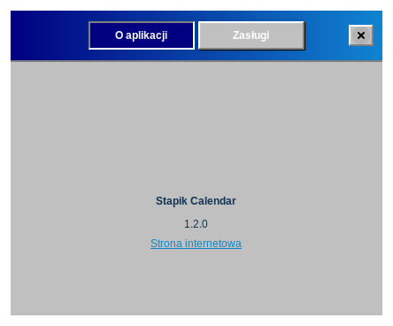
Kod źródłowy i zgłaszanie problemów: github.com/Stapik-Group/stapik-calendar. Serwer synchronizacji: github.com/Stapik-Group/stapik-cloud.